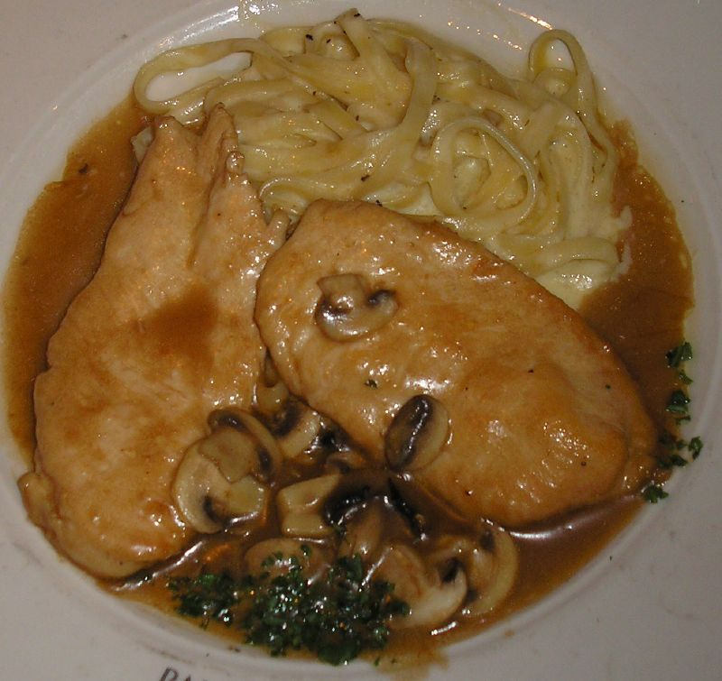

Chicken Marsala

Description
Chicken marsala is made of chicken escalopes in a Marsala wine sauce. It is an Italian-American dish.
Ingredients
- 1/4 cup of all-purpose flour
- 1/2 teaspoon of salt
- 1/4 teaspoon of ground black pepper
- 1/2 teaspoon of dried oregano
- 4 medium skinless and boneless chicken breast halves pounded 1/4" thick
- 4 tablespoons of butter
- 4 tablespoons of olive oil
- 1 cup of sliced mushrooms
- 1/2 cup of Marsala wine
- 1/4 cup of cooking sherry
Steps
- In a shallow bowl, mix together the flour, salt, pepper, and oregano.
- Coat the chicken in the flour.
- Melt butter in olive oil in a large skillet over medium heat. Place chicken in the skillet and lightly brown.
- Turn over the chicken and add mushrooms. Pour in the wine and sherry.
- Cover the skillet and let the chicken simmer for ten minutes, turning once, until no longer pink.
- Plate and enjoy!